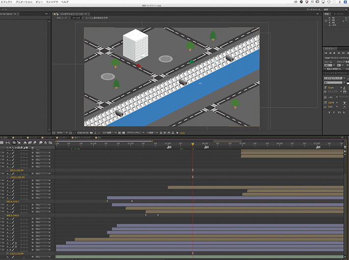
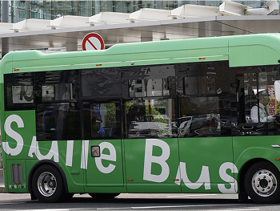

グラフィックデザイン
インタラクティブデザイン
Media Design Creative
近藤研究室では
福井工業大学・環境学部・デザイン学科・近藤研究室ではグラフィックデザインやモーショングラフィックス、インタラクティブデザインなどの制作を行っています。

教員プロフィール
近藤 晶
KONDO SHO
- 学位
- 修士（工学） 課程 （ 2007年3月 京都工芸繊維大学 ）
- 研究分野
- 人文・社会 / デザイン学
人文・社会 / 美学、芸術論
人文・社会 / 地域研究
研究内容
パッケージデザイン

あまみずドリンク
ラベルデザイン
あまみずドリンクのラベルデザインが雨への意識変化にどの程度影響するかを明らかにする取り組み。作成したラベルデザイン3パターンを購入時に提示し、選択したラベルデザインによって意識変化に差があるか調査を行った。
ロゴ

すまいるバス
ラッピングデザイン
電動バス新規導入に伴ってデザインのリニューアルを行った。福井工業大学附属福井高等学校の生徒と、デザイン学科の学生とが協働で制作。
映像

蓄雨解説
アニメーション
日本建築学会雨水活用推進小委員会からの依頼で、2016年3月に発刊された日本建築学会環境基準 雨水活用技術規準（AIJES-W0003-2016）の中で新たに定義された「蓄雨」の概念を分かりやすく説明するために、制作。この動画は、近藤研究室が絵コンテ作成からアニメーション作成、さらに音声のレコーディングまでほぼすべてを担当。
アクセス
〒910-8505
福井県福井市学園3丁目6番1号 大学1号館7階 1-701